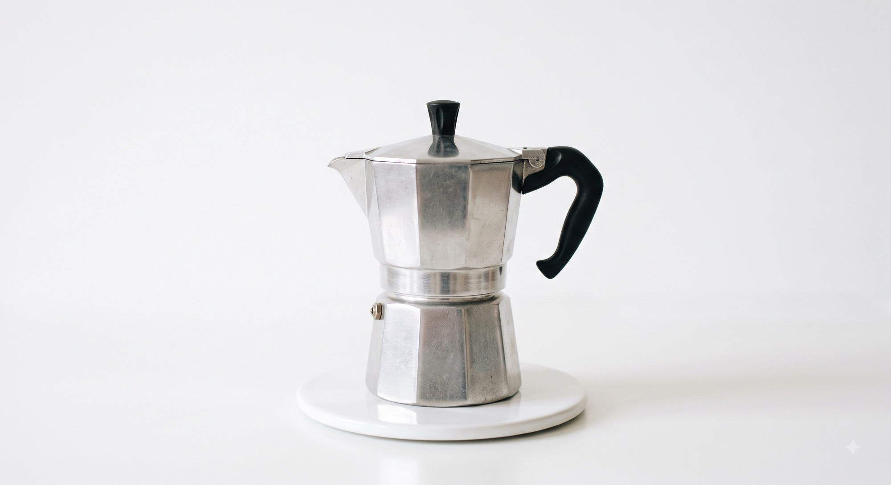
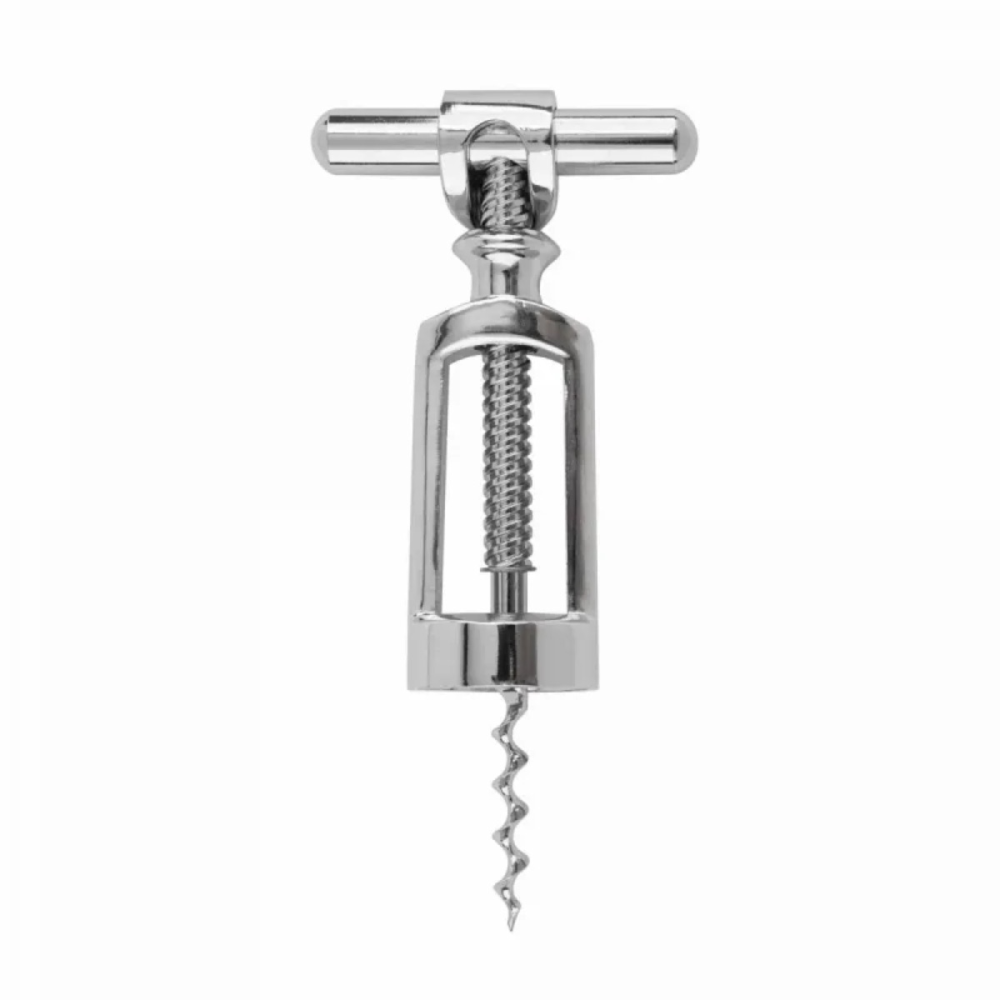
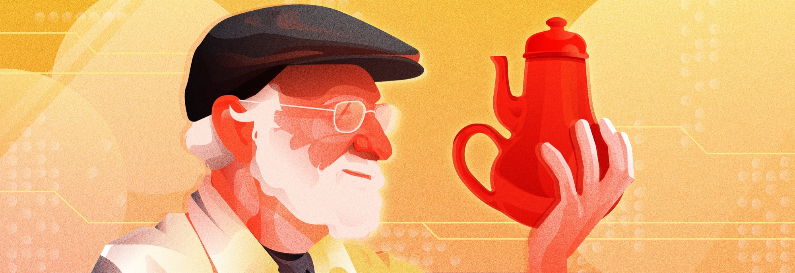
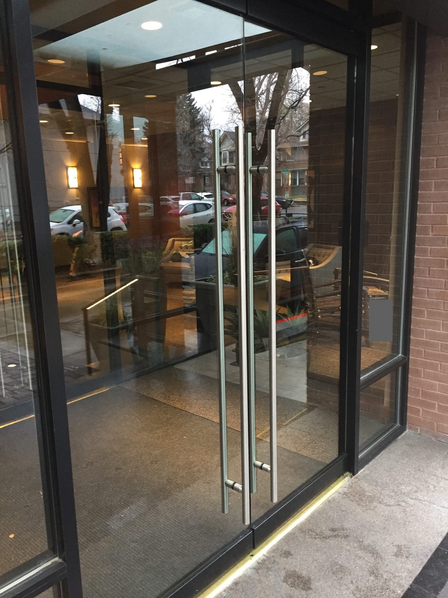
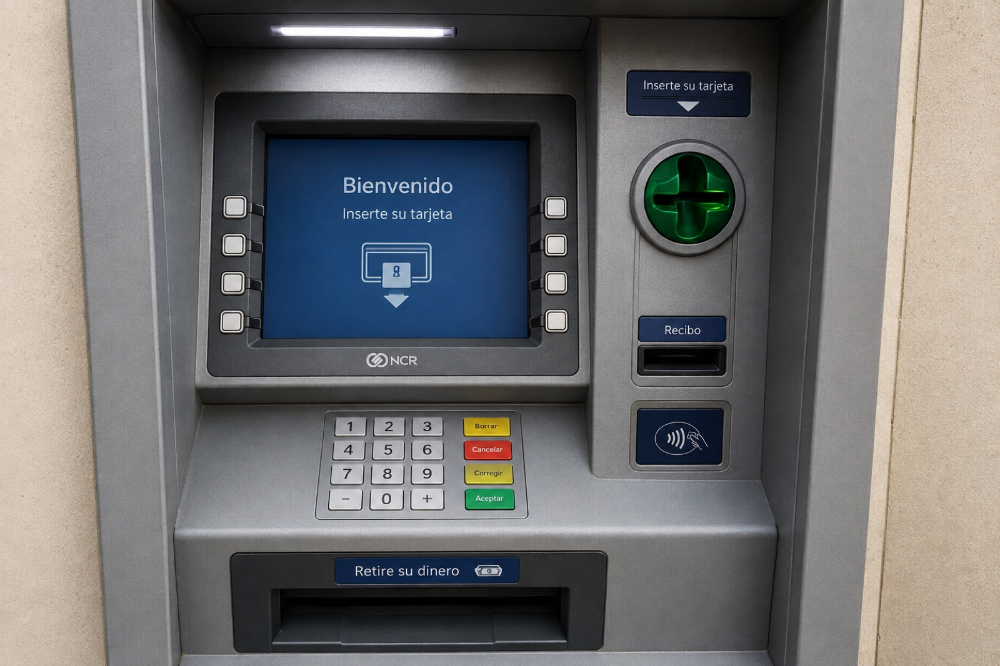

Gracias por la puntualidad
En breve comenzamos
Pensamiento
Sensorial
Clase 2
El lenguaje secreto de las cosas
¿En qué quedamos?
La semana pasada les decía que este es un curso de diseño
No un curso para diseñar interfaces, sino un curso para diseñar relaciones
Versión 1.0 — Una interfaz es aquello que media una relación: la hace posible y, al hacerlo, la organiza, la traduce y la transforma.
La interfaz
Actividad 1
Hablemos de cómo les fue con la bitácora
Tomen lo que trajeron sobre experiencias frustrantes, confusas o satisfactorias
Escríbanlas acá antes de que empecemos
catedra.dejesumensaje.com/pensamiento-sensorial/bitacoraActividad 2
Las tres experiencias que se llevaron para la casa
¿Qué opinan del artículo de Amelia Wattenberger?
¿Qué los hizo pensar, y qué les gustaría hacer diferente?
¿Qué reflexión les dejó Stimulation Clicker?
¿Cuál era la intención de quien lo hizo?
¿Cómo les fue con el sitio para aprender lengua de señas?
¿Qué generó en ustedes interactuar con la posición de sus manos?
¿Cómo nos hablan
las interfaces?
Volvamos a la experiencia más frustrante que encontraron. ¿Quién la quiere describir?
¿Por qué fue tan frustrante?


La clase pasada dijimos que no todos los objetos tienen que ser fáciles, sino fáciles de aprender para quien va a usarlos
Y que no existen malos usuarios ni malos usos, sino usos y usuarios que dependen de un contexto
De los objetos cotidianos, en cambio, sí esperamos que casi cualquiera los entienda sin que nadie se los explique
Donald Norman
El padre de la usabilidad y el diseño UX

Quién es
Psicólogo cognitivo, no diseñador de formación. Trabajó en la investigación del accidente
nuclear de Three Mile Island, donde concluyó que el problema no había sido la torpeza de
los operarios sino un cuarto de control imposible de leer.
En 1988 publicó The Psychology of Everyday Things, que después se rebautizó
The Design of Everyday Things y se revisó y amplió en 2013. Entre medio dirigió
tecnologías avanzadas en Apple y fundó, con Jakob Nielsen, la consultora que hoy sigue
escribiendo la mitad de lo que se cita en usabilidad.
Norman, 1988 / 2013

Si la interfaz media la relación entre una persona y un sistema para alcanzar un objetivo, lo hace mediante mecanismos que posibilitan, comunican, orientan, limitan y responden a la acción
Affordance¿Qué puedo hacer?
Significante¿Cómo sé que puedo hacerlo?
Restricción¿Qué no puedo hacer?
Mapping¿Cuál de todos, y con qué resultado?
Feedforward¿Qué va a pasar si lo hago?
Feedback¿Qué pasó?
Vamos en orden.
Más que los sistemas y reglas de la interfaz, pensemos en estos conceptos como preguntas que le podemos hacer a la mediación.

Primera parte
¿Se puede? ¿Y se nota?
Concepto 1 de 6 · Affordance
¿Qué puedo hacer?
Concepto 1 de 6 · affordance
Affordance
Una posibilidad de acción que surge de la relación entre algo y quien lo enfrenta.
Gibson, 1979 · Norman, 1988 / 1999
La ranura admite algo delgado y rectangular. Lo admite aunque nadie lo diga, aunque el letrero esté tapado, aunque sea de noche.
«No se podía, y punto.» No es un malentendido ni un problema de comunicación: la acción no existía.
La palabra la inventó James Gibson, un psicólogo de la percepción, y para él nombraba una relación, no una propiedad
Por eso depende de quién llega: esa misma ranura, para alguien en silla de ruedas, está a la altura equivocada
Concepto 2 de 6 · Signifier (significante)
¿Cómo sé que puedo hacerlo?
Concepto 2 de 6 · signifier
Signifier
La señal perceptible que comunica qué acción es posible y cómo hacerla.
Norman, 2013
La flecha impresa junto a la ranura, con el dibujo de la tarjeta y el chip hacia arriba. La luz que parpadea cuando llega el turno de insertarla.
«Estaba ahí todo el tiempo y nunca lo vi.» La acción era posible; lo que faltó fue quien la anunciara.
La ranura no cambió. Lo único que cambió es que ahora se sabe cómo entra la tarjeta
Norman se inventó esta segunda palabra justamente para dejar de estirar la primera
Cuando la forma y la etiqueta se contradicen
El significante que dice la verdad
La flecha coincide con lo que el lector espera. La forma y el mensaje dicen lo mismo, y nadie necesita leer nada.
El significante que miente
Cambiaron el lector y nadie repintó la flecha. Gana la forma: la mano ya metió la tarjeta al revés antes de que el ojo alcanzara a leer.
La affordance decide qué puede pasar. El significante decide qué va a intentar la gente
Concepto 3 de 6 · Restricción
¿Qué no puedo hacer?
Concepto 3 de 6 · constraint
Restricción
Lo que limita las acciones posibles para que las que queden sean las correctas.
Norman, 2013
La ranura es más angosta que dos tarjetas y tiene un tope al fondo. La tarjeta al revés no entra: no hay que leer nada ni acordarse de nada.
«Pude hacer algo que no debía, y me di cuenta después.» El error ya ocurrió cuando llegó el aviso.
Dos maneras de decir que no
Un letrero: «no inserte dos tarjetas»
La acción sigue siendo posible. Todo depende de que alguien lea y obedezca. Eso no es una restricción: es un signifier.
Una ranura donde no caben dos
La acción deja de estar disponible. No hay nada que leer, nada que recordar y nada que desobedecer. Eso sí es una restricción.
Por eso la pregunta de diseño no es cómo le aviso a alguien que no haga algo
Es si puedo hacer que esa opción ni siquiera esté disponible
Con esas dos preguntas —¿se puede? y ¿se nota?— quedan cuatro casos posibles
¿Se puede? ¿Y se nota?
Affordance perceptible
El único caso bueno de los cuatro: la acción existe y algo la anuncia. Todo lo demás de esta primera parte es una manera de fallar.
Affordance escondida
Existe y nadie la usa. Los atajos de teclado que el noventa por ciento de la gente no sabe que están ahí.
Affordance falsa
Parece y no es. La zona que parece botón y no responde. La peor de las cuatro: cuesta tiempo y cuesta confianza.
Rechazo correcto
No se puede, y nada lo insinúa. Es una restricción bien puesta: el error ni siquiera se le pasa por la cabeza a nadie.
Gaver, 1991.
Tres de los cuatro casos no son problemas de posibilidad. Son problemas de comunicación
Segunda parte
¿Cuál de todas?
Todo lo anterior valía para un solo control. Con un solo botón no hay manera de equivocarse de botón
Concepto 4 de 6 · Mapping
¿Cuál de todos, y con qué resultado?
Concepto 4 de 6 · correspondencia
Mapping
La correspondencia entre una acción, su representación y su resultado.
Norman, 2013
Cada botón está justo al frente de su opción. Uno no lee el botón: lee la línea que tiene enfrente y aprieta lo que está a su lado.
«Probé hasta que acerté», o «tuve que aprenderme cuál era». El buen mapping se lee; el malo se memoriza.
Norman llama natural a la correspondencia que usa el espacio o una analogía del cuerpo.
Tercera parte
¿Antes o después?
Las cuatro preguntas anteriores se responden mirando. Las dos que faltan dependen de cuándo llega la información
Entre lo que una persona quiere hacer y lo que sabe cómo hacer hay una distancia: Norman la llamó el golfo de la ejecución
Y entre lo que la máquina hace y lo que la persona alcanza a entender hay otra: el golfo de la evaluación
Concepto 5 de 6 · Feedforward
¿Qué va a pasar si lo hago?
Concepto 5 de 6 · feedforward
Feedforward
La información que el sistema entrega antes de que actúes, para decirte qué va a pasar si actúas.
Djajadiningrat, Overbeeke y Wensveen, 2002 · Vermeulen et al., 2013
«Esta transacción tiene un costo de $7.500», antes de confirmar. «Este cajero solo entrega billetes de cincuenta», antes de que uno pida treinta.
«Si lo hubiera sabido, no lo aprieto.» La acción se pudo hacer, se supo hacer, y aun así salió cara.
Un solo botón, dos conceptos. El botón dice RETIRAR
Significante
La forma y la etiqueta me dicen que se puede activar. Nada más.
Feedforward
Me dicen que van a cobrarme $7.500 y que van a salir billetes de cincuenta. Qué cuesta, antes de que cueste.
Sin feedforward, la única manera de saber qué hace un botón es apretarlo
Concepto 6 de 6 · Feedback
¿Qué pasó?
Concepto 6 de 6 · retroalimentación
Feedback
La señal que el sistema devuelve después de que alguien actúa, para confirmar qué pasó.
Norman, 2013 · Gaver, 1991
El pitido de cada tecla, el «procesando», el ruido de los billetes contándose adentro, el recibo que sale. Casi todo es sonido.
«Lo hice tres veces porque no pasaba nada.» Sin señal, uno no sabe si funcionó, si va en camino o si la máquina ni se enteró.
Tiene que ser inmediato: una décima de segundo tarde y el cerebro ya lo leyó como otra cosa
Y tiene que ser proporcional: el sistema que celebra cada clic entrena a la gente para no mirarlo
Y no llega solo al final: mientras la máquina cuenta los billetes, ese ruido también está contando algo
Una alarma que suena siempre es, para efectos prácticos, una alarma apagada
Seis preguntas, cuatro piezas, una sola máquina.
Affordance¿Qué puedo hacer?
Significante¿Cómo sé que puedo hacerlo?
Restricción¿Qué no puedo hacer?
Mapping¿Cuál de todos, y con qué resultado?
Feedforward¿Qué va a pasar si lo hago?
Feedback¿Qué pasó?
Eso es lo que le preguntamos nosotros a la máquina.
Y del otro lado: así suena cuando la máquina no contesta
«No se podía, y punto.»Affordance
«Estaba ahí todo el tiempo y nunca lo vi.»Significante
«Pude hacer algo que no debía.»Restricción
«Probé hasta que acerté.»Mapping
«Si lo hubiera sabido, no lo aprieto.»Feedforward
«Lo hice tres veces porque no pasaba nada.»Feedback
Ninguna de estas seis frases dice «me equivoqué».
Casi todo lo que este cajero hace bien lo hace con una ranura, seis botones y un ruido. Casi nada de eso es la pantalla
Vale, con este nuevo lenguaje que adquirimos, volvamos a la bitácora
catedra.dejesumensaje.com/pensamiento-sensorial/bitacora-otra-vezActividad
En parejas
Entren a este sitio y traten de llegar al final
userinyerface.comMientras juegan
- 01Cada vez que se atasquen, anoten lo que está fallando.
- 02Después le ponen el nombre: cuál de las seis preguntas se quedó sin respuesta.Algunas se quedan sin dos. Anoten las dos.
- 03Al terminar, compartan sus hallazgos para ver cuál fue la pareja que mejor hizo el diagnóstico.
Receso
Quince minutos
Laboratorio 1
La versión más cruel de UNO
Vale, acá están las instrucciones
catedra.dejesumensaje.com/pensamiento-sensorial/unoPara la próxima clase
La lectura
Norman, The Design of Everyday Things (edición revisada, 2013), capítulo 1:
las secciones sobre modelos conceptuales y la imagen del sistema. Ocho
o diez páginas.
Ahí Norman separa tres cosas que solemos confundir: el modelo que tiene en la cabeza
quien diseña, el modelo que arma quien usa, y la imagen del sistema —que es lo único
que los conecta, porque quien diseña nunca está ahí para explicar.
Las seis preguntas de hoy son las herramientas para leer esa imagen: si la máquina
las responde, el modelo que arma quien usa se parece al que tenía quien diseñó.
Pregunta guía: ¿qué modelo del sistema construyeron sin que nadie se los explicara, y en qué punto se demostró que era falso?
Y la parte 2 del cajero: cada grupo recibe un rasgo, y construye una interfaz nueva para una mente que el cajero de hoy deja por fuera
La tarea y las lecturas están acá
catedra.dejesumensaje.com/pensamiento-sensorial/cajero-para-todosReferencias
- Gibson, J. J. The Ecological Approach to Visual Perception (1979).
- Norman, D. A. The Design of Everyday Things (1988; ed. rev., 2013).
- Norman, D. A. «Affordance, Conventions and Design». Interactions (1999).
- Gaver, W. W. «Technology Affordances». CHI '91 (1991).
- Djajadiningrat, T., Overbeeke, K. & Wensveen, S. «But how, Donald, tell us how?» (2002).
- Vermeulen, J., Luyten, K., van den Hoven, E. & Coninx, K. «Crossing the Bridge over Norman's Gulf of Execution» (2013).
- Reason, J. «Human error: models and management». British Medical Journal (2000).
- Ilustración de Don Norman: Zachary Monteiro — zacharymonteiro.com. El frente del cajero es una reconstrucción, no la foto de una máquina real.